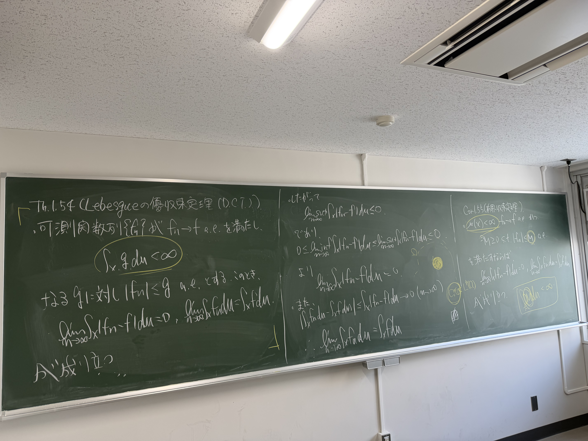
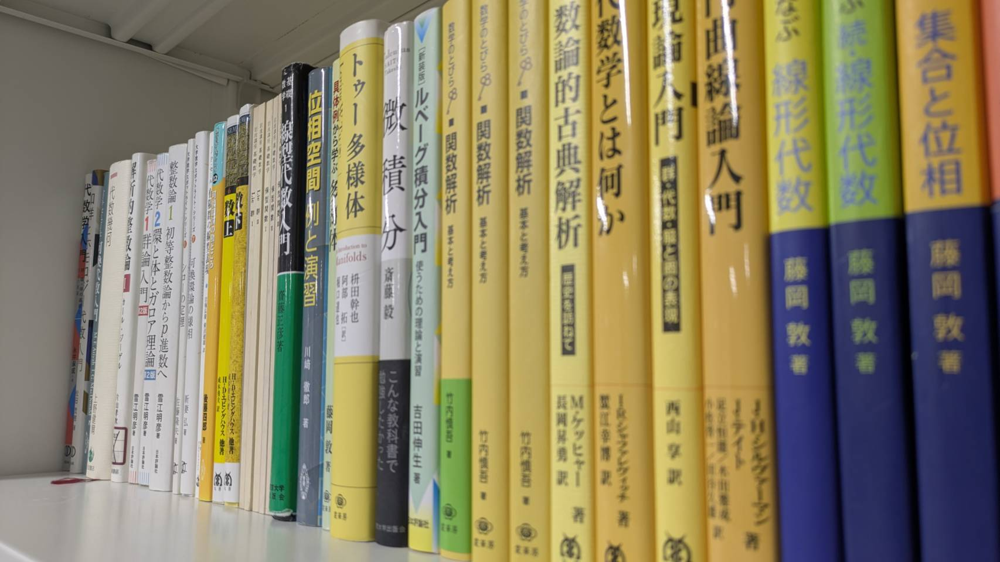

紹介
この団体は神奈川大学理学部理学科数学コースに所属する学生たちがより数学を深く学ぶために立ち上げた自主ゼミをやるための集団です.
自主ゼミとは学生が主体となって行う勉強会のことで,下に写真があるので雰囲気はそこを参照してください.
メンバーの学年及び専門分野（目標）
M1 H.K. 偏微分方程式/実解析/数理物理学
M1 A.T. 変分法
B4 A.F. 集合値係数双対数
B3 T.S. 関数解析
B3 A.F. ホモロジー、関数解析
B3 ꓘꓘT.Abo 代数的整数論
B2 るぅく 多様体
B2 Y.K.
B2 S.S.
B2 M.N.
活動記録
直近の活動記録
過去の活動記録
~2024の活動記録~~
数学の扉シリーズ 解析入門
手を動かして学ぶシリーズ 集合と位相 (集合のみ)
~~2025~~
手を動かして学ぶシリーズ 集合と位相 (集合のみ)
手を動かして学ぶシリーズ 線形代数
数学の扉シリーズ 解析入門
赤雪江 2章のみ
~~2026~~
ルベーグ積分 要点と演習 収束定理まで
内田位相
増田久弥 関数解析
雪江整数論1 4章まで
手を動かして学ぶ 基本群
~~春学期開始~~
有限群の線形表現 (進行中)
青雪江 (進行中)
Brezis (進行中)
Tu 多様体 (進行中)
ゼミの様子

積分と極限の交換ができるように!
普段の様子
更新をお待ちください

色んな本を持ち込んでみんなで見れるようにしてます!
Q&A
Q.数学得意じゃないとだめですか?
A.得意じゃなくても大丈夫です!数学が好きという気持ちがあれば大歓迎!
Q.参加方法は?
A.ゼミを開催する教室に来てもらうだけで大丈夫です!他大生の場合は事前連絡していただけると嬉しいです!
Q.途中参加okですか?
A.途中参加okです!雰囲気を見学するだけでも大丈夫ですよ!
Q.発表は必須ですか?
A.必須ではありません!聴講のみでも大丈夫ですよ!
Q.参加方法は?
A.Xやインスタなどで事前に告知を行います.フォローして待っててください!
Q.もっと活動の雰囲気を知りたい!
A.noteに活動記録を載せています!以下のリンクからぜひ見てください!